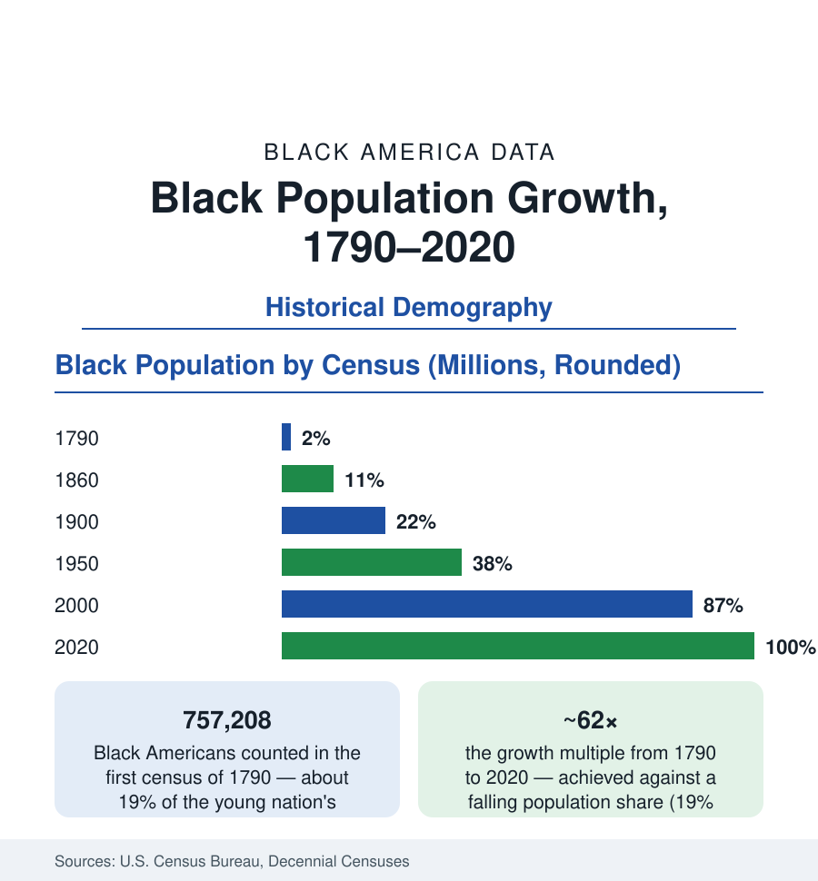

Black Census
Black Population Growth in the Census Record, 1790 to Today
From 757,208 counted in the first census of 1790 to roughly 47 million today — the decennial record of a people's growth under slavery, freedom, migration, and return. The historical demography.

The decennial census is the longest continuous measurement of Black America: twenty-four counts from 1790 to 2020. It begins with 757,208 people — about one American in five, nine in ten of them enslaved — and it reaches roughly 47 million (Black alone or in combination) in the current decade. Between those numbers lies the whole demographic history: growth under slavery driven by forced reproduction after the trade's ban, the freedom century's natural increase, the Great Migration's redistribution, and the modern era's suburban and immigrant compounding. This article reads the series.
Growth Under Slavery, 1790–1860
The antebellum series is demography's indictment in numbers: from 757,000 in 1790 to 4.44 million in 1860, the enslaved population grew at roughly 2.5% a year — among the fastest natural-increase rates in the recorded world, and the only major slave system in the Americas that reproduced itself without continuous importation (the Caribbean and Brazilian systems consumed their populations and imported replacements; the United States, after the 1808 trade ban, grew its enslaved workforce domestically — the historians' term is natural increase, and the archive of sale and separation behind it is the domestic slave trade's million-person forced migration from the Upper to the Lower South). The share of the national population peaked near 19% in the early republic and slid as European immigration compounded the white count — a denominator effect that defines the whole series: Black America's absolute growth has been continuous and substantial in every decade of the record, while its share fell for 130 years on immigration's arithmetic alone.
Freedom's Century, 1870–1940
Emancipation enters the census in 1870 at 4.88 million (the first count of the freed population — itself an undercount the demographers flag, the 1870 enumeration of the war-torn South being the series' least reliable). The growth that follows — 6.58 million in 1880, 8.83 million in 1900, 10.46 million in 1920, 11.89 million in 1940 — is natural increase in freedom's hard conditions: high fertility against high mortality (the life-expectancy file of the health section begins here: Black life expectancy near the mid-thirties in 1900), the share sliding to 9.7% by 1930 as immigration peaked, the geography still nine-tenths Southern and majority-rural at the century's turn. The demographic transition arrives mid-period — mortality falling first (the water, sanitation, and hookworm-era gains), fertility following — and the Great Migration's first wave is visible in the state tables between 1910 and 1930 as redistribution within a growing total: the national count never falls in any decade of the entire series, a fact worth stating plainly against every narrative of disappearance.
The Migration Decades and the Modern Compounding, 1950–2020
The modern series accelerates: 15.04 million in 1950, 18.87 in 1960, 22.58 in 1970, 26.5 in 1980, 30.0 in 1990, 34.7 in 2000 (alone), 38.9 in 2010, 41.1 million alone and 46.9 in combination in 2020 — with the growth mechanics changing under the totals: the baby boom's Black cohort (fertility peaking with the nation's in the 1950s–60s), the mortality revolution's compounding (life expectancy's forty-year climb adding elders to every count — the seniors file), the post-1965 immigration era adding the foreign-born file (one Black American in ten now born abroad), and the measurement changes themselves entering the series — the 2000 census's mark-one-or-more-races option and the 2020 question redesign reshaping the alone/combination boundary the projections article treats. The share stabilizes and edges up across the modern decades (12–14% alone-or-in-combination) as immigration diversifies the denominator itself.
Growth Rates, Doubling Times, and What the Series Proves
Read as rates, the series doubles on a generational clock: roughly every 25–30 years across the freedom era, slowing toward the modern replacement-era pace shared with the whole developed world. The demographers' cautions ride along — undercounts varying by era (the differential undercount file: the modern censuses' persistent few-percent net undercount of Black Americans, highest for young Black men and young children, a measurement gap with funding consequences counted in the billions), category changes complicating strict comparability, and the 1870 and 2020 counts' special circumstances flagged in the Bureau's own documentation. None of it disturbs the series' central finding, which is simple enough to state in one line: in 230 years of counting, through slavery, terror, migration, and every policy aimed at the count, the number has never gone down.
Reading the Long Series
Every other article in this section is a cross-section; this one is the film. A population counted at 757,000 in a slave republic's first census stands at roughly 47 million in the current one — the growth itself the most basic data point Black America Data publishes, and the one the projections article carries forward: the demographers' models have the count compounding toward the 60 millions by the century's later decades, on the same arithmetic of births, deaths, and arrivals that built every line of the table behind it.
More in Black Census
The Black Population of the United States: Size, Definitions, and Distribution
The Black population of the United States totals 52.8 million — 15.4 percent of the nation. How the Census Bureau defines and counts the population, and where it lives.
Black Median Household Income in the United States
Black median household income stands at $56,490 in the Census Bureau's annual income report — how the figure is measured, how it compares, and what drives it.
The Black Poverty Rate: Levels, Children, and the Long Trend
The official Black poverty rate is 17.1 percent — against 11.1 percent nationally and 7.7 percent for non-Hispanic White Americans. How poverty is measured and what the data show.
Source: U.S. Census Bureau decennial censuses, 1790–2020; Historical Statistics of the United States; Census Bureau population estimates.